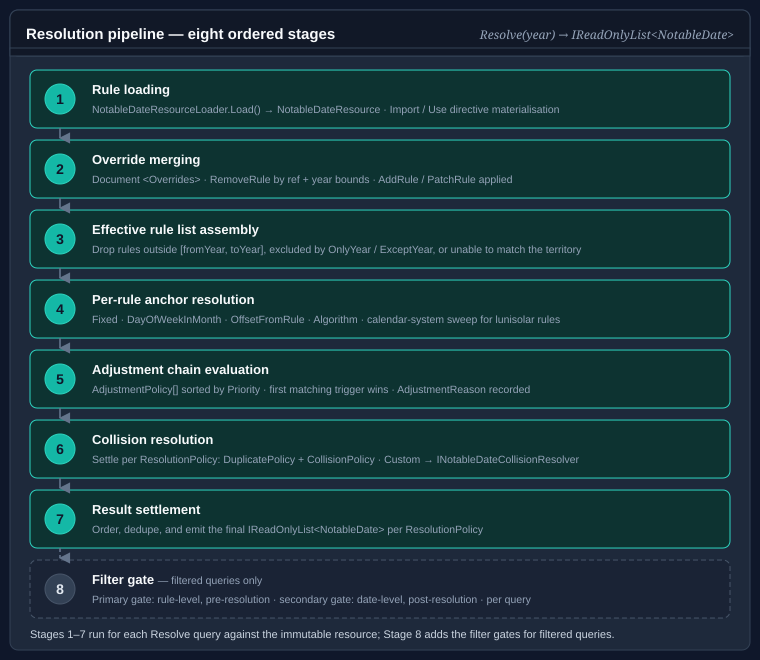

The resolution pipeline
This page walks through every stage the calendar engine runs — first the load stages that turn an authored document into an immutable NotableDateResource, then the query stages a NotableDateService runs to turn that resource into an IReadOnlyList<NotableDate>. Understanding the pipeline helps diagnose why a date appears, does not appear, or was shifted from its expected position.
For the vocabulary used below (document vs. resource, rule vs. resolved date, nominal vs. observed) see Core concepts.
Pipeline overview

Loading happens once, when the resource is built; querying happens per request:
NotableDateResourceLoader.Load(xml[, resolver][, algorithms])
parse → resolve <Imports> → apply <Overrides> → assemble → validate
→ immutable NotableDateResource
NotableDateService.Resolve(date | range | year, territory[, filter])
strategy → nominal date → adjustment policies → observed date
→ duplicate/collision settlement → emission → NotableDate set
Load stages
The loader (NotableDateResourceLoader) takes the document text, an optional Func<string,string?> resolver used to fetch imported catalogues by name, and an optional INotableDateAlgorithmRegistry that whitelists custom <Algorithm key> values during validation.
using Bodu.Globalization.Calendar;
NotableDateResource resource = NotableDateResourceLoader.Load(
documentXml,
CommonNotableDateResources.Resolver); // resolves <Import resource="global-core"> etc.
Stage 1 — Parse
The document (XML on the urn:bodu:globalization:calendar namespace, or JSON via LoadJson) is parsed into its in-memory shape: a <Metadata> block, the resource-level <ResolutionPolicy>, the top-level <AdjustmentPolicies>, the <Imports>, the <NotableDates>, and the <Overrides>. Malformed input throws FormatException (or ArgumentException / ArgumentNullException for bad arguments) before any semantic work.
Stage 2 — Resolve <Imports>
Each <Import resource="…"> names a catalogue. The loader calls the supplied resolver with that name to obtain the imported document text and recursively loads it. An <Import> with no <Use> child imports every concept from the catalogue; <Use notableDateRef="…"> cherry-picks a single concept and can rename it (as), re-scope it to a territory, override its category or non-working flag, and attach <Adjustments>. Local concepts win over imported concepts of the same id, so a document can import a baseline and selectively replace pieces of it.
The bundled catalogues are resolved through CommonNotableDateResources (Resolver / Resolve(name)) — global-core, christian-western, global-islamic, global-hindu, and friends.
Stage 3 — Apply <Overrides>
ID-targeted edits in <Overrides> are applied to the assembled-but-not-yet-finalised concept set:
<AddRule notableDateRef="…">appends a new<Rule>to an existing concept.<PatchRule notableDateRef="…" ruleRef="…">replaces scalar attributes (priority,category,nonWorking,durationDays,comment) and, when supplied, the<Applicability>,<Strategy>,<Tags>, or<Adjustments>of an existing rule.<RemoveRule notableDateRef="…" ruleRef="…">deletes a rule.
Overrides let a regional document tweak imported concepts without forking them. See Authoring notable date rules for the full override vocabulary.
Stage 4 — Assemble
The imported, overridden concepts are flattened into the immutable resource: a single ResolutionPolicy, the resolved AdjustmentPolicy set, and the list of NotableDateDefinition concepts (each carrying one or more NotableDateRule recipes).
Stage 5 — Semantic validation
The assembled resource is validated. Each finding is a NotableDateValidationDiagnostic carrying a NotableDateValidationSeverity (Information, Warning, or Error), a Code, and a Message. Typical findings: a duplicate concept or rule id, an <OffsetFromRule> or ReplaceWithRule pointing at a missing reference, a reference cycle, or an <Algorithm key> that is neither built in nor present in the supplied registry.
If any error-severity diagnostic is produced, the loader throws a NotableDateValidationException; its Diagnostics property exposes the full list so a build step can report every problem at once:
try
{
NotableDateResource resource = NotableDateResourceLoader.Load(documentXml, resolver);
}
catch (NotableDateValidationException ex)
{
foreach (NotableDateValidationDiagnostic d in ex.Diagnostics)
Console.WriteLine($"[{d.Severity}] {d.Code}: {d.Message}");
}
Warnings (currently produced only by non-fatal XSD findings under BODU-CAL-SCHEMA) do not abort the load; an <Algorithm key> that is neither built in nor registered is an error (BODU-CAL-ALGORITHM). See Calendar validation diagnostics for the full code catalogue.
Query stages
A query targets a single DateOnly, a DateRange, or a year (via the service.Resolve(year, territory) extension), with an optional NotableDateFilter. For each concept whose rules are applicable to the requested territory and year, the engine runs the following.
Stage 6 — Strategy → nominal date
The rule's single IDateCalculationStrategy computes the nominal date for the year (DateOnly? Calculate(int year, StrategyResolutionContext context)). A strategy returns null — and the rule produces no occurrence — when the date does not exist that year (e.g. 29 February in a common year, a Fifth weekday a month lacks, or an <OffsetFromRule> whose reference produced nothing). <OffsetFromRule> resolves its referenced rule through the context's ResolveReference, cycle-safely. The nominal date becomes NotableDate.ActualDate. See Date calculation algorithms.
Stage 7 — Adjustment policies → observed date
Each policy the rule references (<Adjustment policyRef="…" />) is considered in ascending priority. A policy is skipped when its <Scope> does not match the resolution context; otherwise its AdjustmentTrigger is evaluated against the nominal date. The first policy whose trigger fires applies its AdjustmentAction, producing the observed date; the rest are skipped. The occurrence's <Emission> decides what is emitted (ObservedOnly, ActualAndObserved, ActualOnly, Suppress) and sets IsObserved, AdjustmentPolicyId, and AdjustmentReason. See Observance adjustment rules.
Triggers such as IfNonWorkingDay consult the non-working dates already settled for the year, so a higher-priority anchor rule (Christmas) is visible to a lower-priority dependent rule (Boxing Day).
Stage 8 — Duplicate and collision settlement
Once every applicable rule has produced its occurrence(s), the resource's ResolutionPolicy reconciles them:
- DuplicatePolicy (
Error,KeepFirst,KeepLast,Merge) reconciles identical occurrences. - CollisionPolicy (
KeepAll,HighestPriorityOnly,CategoryPriority,Custom) settles distinct rules that land on the same day (SameDayCollisionPolicy) or whose multi-day spans overlap (SpanCollisionPolicy), with ties broken by PriorityDirection (HigherWins/LowerWins).
Under CollisionPolicy.Custom, the supplied INotableDateCollisionResolver (passed to the service constructor) settles the day via Resolve(DateOnly date, IReadOnlyList<NotableDate> colliding). See Rule identity, priority, and observed-date resolution.
Stage 9 — Emission and range inclusion
The settled occurrences are emitted. For a range query, the resource's ObservedDateRangePolicy decides which occurrence date controls inclusion: the observed date (ObservedOccurrenceControlsInclusion), the nominal date (ActualOccurrenceControlsInclusion), or either (BothOccurrencesControlInclusion). A supplied NotableDateFilter is applied last as a predicate over the resolved occurrences (Matches(NotableDate)), and the surviving set is returned.
Two-phase resolution and the year-window scan
Two implementation details of the query path explain results that otherwise look surprising.
Two phases per query. Resolution runs in two passes. The first pass computes every rule's actual (nominal) occurrence purely, and seeds an occupied-day set with the actual dates of the non-working occurrences. The second pass places observed dates in an explicit precedence order — earliest actual date first, then higher Priority, then stable rule identity — so that an action which opts in to skipNonWorkingDates advances past days already claimed by other holidays. This ordering is why a higher-priority anchor (Christmas) is visible to a lower-priority dependent (Boxing Day) within the same year, as traced below.
One civil year either side. Inclusion is decided by the emitted (observed) date, so a single-day query and a range query covering the same span return consistent results. To capture an occurrence whose actual date lies just outside the requested window but whose observed date rolls inside it (or vice versa under ActualOccurrenceControlsInclusion), the service scans one civil year either side of the window before applying the ObservedDateRangePolicy. A late-December holiday whose substitute rolls into early January is therefore found by a January range query without the caller widening the window.
Worked trace — Christmas Day (AU) 2027
Christmas Day 2027 falls on a Saturday; Boxing Day on a Sunday. Assume an Australian resource whose Christmas and Boxing Day rules reference the two policies from the adjustment-rules worked pattern: weekend-to-next-weekday (priority 10, IfWeekend → MoveToNextWeekday) and skip-nonworking (priority 20, IfNonWorkingDay → MoveToNextWorkingDay). Here is service.Resolve(2027, "AU") stage by stage.
Stage 6 — Strategy → nominal date
Christmas Day: <Fixed month="December" day="25"> → ActualDate = Sat 25 Dec 2027
Boxing Day: <Fixed month="December" day="26"> → ActualDate = Sun 26 Dec 2027
Stage 7 — Adjustment policies, Christmas Day
weekend-to-next-weekday(priority 10):IfWeekendmatches (25 Dec is Saturday) →MoveToNextWeekday→ Mon 27 Dec 2027. Higher-priority policy fired; evaluation stops.
Christmas Day → Date = Mon 27 Dec 2027, ActualDate = 25 Dec, IsObserved = true,
AdjustmentPolicyId = "weekend-to-next-weekday"
Stage 7 — Adjustment policies, Boxing Day
The non-working set now includes Mon 27 Dec (the Christmas substitute).
skip-nonworking(priority 20):IfNonWorkingDaymatches (26 Dec is a weekend Sunday) →MoveToNextWorkingDay:- Sun 26 Dec → non-working (weekend) → advance
- Mon 27 Dec → non-working (Christmas substitute) → advance
- Tue 28 Dec → working → stop
Boxing Day → Date = Tue 28 Dec 2027, ActualDate = 26 Dec, IsObserved = true,
AdjustmentPolicyId = "skip-nonworking"
Stage 8 — Collision settlement
27 and 28 December now each carry exactly one occurrence; no two distinct rules share a day, so the SameDayCollisionPolicy has nothing to settle.
Stage 9 — Emission
Both policies emit ObservedOnly, so the result for 2027 includes:
27 Dec 2027 Christmas Day IsObserved=true ActualDate=25 Dec 2027
28 Dec 2027 Boxing Day IsObserved=true ActualDate=26 Dec 2027
A range query that spans late December includes both because the observed dates fall inside the window under the default ObservedOccurrenceControlsInclusion.
Where to go next
- NotableDateRule and adjustment-policy reference — the element-by-element schema used at every stage.
- Observance adjustment rules — the full trigger and action catalogues and emission modes.
- Rule identity, priority, and observed-date resolution — duplicate / collision settlement and observed-date range inclusion.
- Date calculation algorithms — strategy resolution and reference cycle detection.
- Building and extending the service — registries, the reloadable provider, and the plugin system.
- Globalization & Calendars guides — every guide in this topic: the runtime, companions, data packs, and the notable-date catalogue.